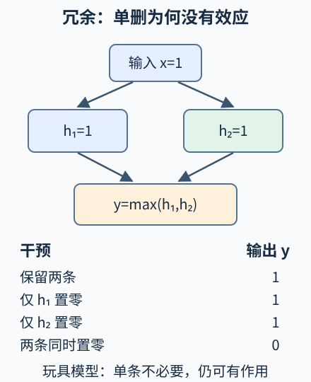

本讲目录
AI 前沿 03 · 机制可解释性：从“亮了什么”到“什么真正改变了输出”
核心问题：一个神经元在模型回答“猫”时总是活跃，删除它却没有影响。是测量错了，还是“找到概念神经元”的解释太简单？本讲研究特征表示、稀疏分解与因果干预。先修：神经网络的中间激活、Transformer 中的信息传递。资料核查截至 2026-09-08；下文明确区分数学玩具模型、研究观察与尚未完成的机制解释。
1. 一个坐标轴未必对应一个概念
神经网络中间层的激活可以写成 \(h\in\mathbb R^d\)。每个坐标是一个数，但我们希望解释的是“否定”“地名”“括号是否配对”这样的特征。直接逐个查看神经元，相当于假设人能理解的特征恰好对齐坐标轴；训练目标通常没有保证这一点。
叠加表示的基本设想是：当特征很少同时出现时，网络可能用少量维度容纳更多特征方向。考虑平面内三个单位方向
若每次只有一个非负特征强度 \(a_i\) 非零，\(h=\sum_i a_i d_i\) 落在对应射线上，可以区分三类。但若三个强度都为 1，\(h=d_1+d_2+d_3=0\)，就与全部缺席相撞。稀疏性减少同时冲突，不会让信息维度凭空无限增加。 Toy Models of Superposition，arXiv 首稿 2022-09-21用受控模型研究了这类表示机制；这不等于证明所有大模型都严格采用本例三个方向。
2. 稀疏自编码器究竟学了什么
我们可以收集冻结语言模型的激活，另训练一个稀疏自编码器（SAE）。它把 \(h\) 编码成较高维的 \(z\in\mathbb R^m\)，再重建原激活：
这里 \(m>d\) 允许候选特征比原维度更多，\(D\) 的每一列是一个特征方向。一个教学版目标是
第一项要求解释保留原激活，第二项让每个样本只启用少数特征。单位列范数不是装饰：若任意放大 \(D\) 并同比缩小 \(z\)，重建不变而稀疏惩罚下降，会产生尺度漏洞。实际 SAE 还有不同稀疏约束与激活设计，此式不是所有实现的统一标准。
为什么“激活稀疏”仍不等于“概念已解释”？以一维且 \(h\ge0\) 的子问题为例，最小化 \((h-z)^2+\lambda z\)，约束 \(z\ge0\)。内部解满足 \(2(z-h)+\lambda=0\)，结合边界得
惩罚会把保留的激活也缩小。重建误差、特征拆分或混合都可能影响下游解释；漂亮的特征名称并不消除这些问题。Mapping the mind，发布于 2024-05-21展示了在生产语言模型上提取和干预特征的研究，同时仍将完整理解模型视为未完成的目标。
3. 相关性之后，必须提出可被干预推翻的假设
观察“\(z_i\) 大时常输出某词”，只能得到相关线索。共同的上游输入可能同时引起特征与输出；特征也可能携带信息，却没有被后续计算使用。更强的问题是：在固定输入及其余指定条件下，改变特征是否按预测改变输出？
常用操作包括消融、把另一输入的激活替换过来，以及沿一个特征方向增加强度。它们都要说明改哪里、改成什么、保留什么、测哪个输出。测量目标最好是候选答案概率或 logit 的变化，并搭配多个输入和负对照，而不只是观察一次生成文本“看起来变了”。

设 \(x\in\{0,1\}\)，隐藏变量 \(h_1=h_2=x\)，输出为
当 \(x=1\)，自然运行是 \((h_1,h_2,y)=(1,1,1)\)。执行 \(do(h_1=0)\) 后，另一条路径仍传递 1，输出不变；执行 \(do(h_1=0,h_2=0)\) 后才得到 0。所以“单消融无影响”不能推出“这条路径没有作用”，它也可能被另一条路径替代。
在此模型、输出 \(y=1\) 和给定干预集合下，每条激活路径都足以维持输出；单条路径不是必要条件，两条至少一条活跃才是必要条件。必要性与充分性都必须附带背景条件，不能被简化成特征的永久标签。
4. 实验：先预测单删与双删
保持 \(x=1\)，先写下“仅删除第一条”和“两条都删除”的输出。再把 \(x\) 改为 0：没有激活的场景能检验原来路径的作用吗？
静态实验后备：OR 冗余路径
| 输入 x | 干预 | 干预后的 h₁,h₂ | 输出 y |
|---|---|---|---|
| 1 | 不干预 | 1,1 | 1 |
| 1 | 第一条置零 | 0,1 | 1 |
| 1 | 第二条置零 | 1,0 | 1 |
| 1 | 两条置零 | 0,0 | 0 |
| 0 | 不干预或置零 | 0,0 | 0 |
这是确定性因果模型的真值表，不需要统计估计。自然数据只含隐藏状态 (0,0) 与 (1,1)；单消融产生的 (0,1) 或 (1,0) 位于自然分布之外。公式让本例的反事实可精确计算，大模型中的类似干预还需要有效性检验。
5. 前沿正在从特征走向计算链条
单个 SAE 重建的是激活；要解释多个层怎样协作，还需定位特征之间的计算关系。Circuit Tracing，发布于 2025-03-27使用跨层替代模型与归因图提出机制假设，并用干预核查。方法明确承认注意力模式的生成机制、重建缺口和跨输入的一般电路等限制，不能把归因图当成完整执行日志。
同日的On the Biology of a Large Language Model将方法用于特定模型的多步任务等案例，也考察了公开思维链与实际机制不一致的情形。案例说明内部路径可以被研究，不说明所有推理都已被读出，更不意味着模型写出的解释天然忠实。
更新的机制问题，2026-08-21：Characterizing interference weights in a tiny language model把“权重大”进一步拆成两问：它对输出影响多大，以及它对任务损失有帮助还是有害。可以用消融前后的平均损失差
衡量后一问：正值表示删掉后更差，但这仍依赖评估分布。研究在单层、约 290 万参数的模型上检查虚拟权重，发现原始权重大小不足以识别功能连接。作者明确说明精细测量开销难直接推广到前沿大模型。该官方研究笔记把本讲的消融逻辑推进到真实训练的小模型，不是已经完成通用电路读出的宣布；单权重的效果也不能直接相加预测联合删除，因为非线性交互仍在。
专业验收应问：替代模型保留多少原行为？预测的干预在原模型上是否成立？换一种提示和特征字典还成立吗？零消融是否制造了异常状态？一个方向被命名为“欺骗”或“安全”后，仍须检验其选择性、混杂与副作用。这些问题关系到故障诊断和行为控制，是机制解释的研究内容，而不是画完回路之后才补上的声明。
6. 两道迁移题
题一：换成 AND。 保持 \(h_1=h_2=x\)，令 \(y=\min(h_1,h_2)\)。在 \(x=1\) 时，单消融结果怎样？单条激活是否充分？
展开答案与条件
删除任一条都使输出变为 0，因此两条在此背景下分别必要。但只保留一条为 1、另一条为 0，不足以产生 \(y=1\)，所以单条并不充分。自然输入上的 OR 与 AND 都满足 \(y=x\)，只有观察自然数据无法区分两个内部机制；干预揭示差异。
题二：相关特征能否直接当开关？ 某 SAE 特征与拒答高度相关，放大它后模型也更常拒答。这是否证明它只负责安全判断？
展开研究设计
不能。干预支持该方向能影响输出，但它可能混合语气、主题和拒答等属性，过大干预也可能破坏一般语言能力。应比较正常与危险任务、多个幅度及随机方向对照，检查副作用和分布偏离，再测试更具体的机制假设。不能用一次行为变化给整个向量方向赋予唯一语义。
速查摘要
| 概念 | 形式或检查 | 不应推出的结论 |
|---|---|---|
| 稀疏叠加 | \(h=\sum_i a_i d_i\)，少数 \(a_i\) 活跃 | 维度不再限制信息 |
| 教学版 SAE | \(\|h-Dz-b_d\|^2+\lambda\|z\|_1\)，解码列归一化 | 每个稀疏方向都有唯一自然概念 |
| OR 冗余电路 | \(h_1=h_2=x\)，\(y=\max(h_1,h_2)\) | 单消融无效意味着路径无用 |
| 因果验收 | 干预位置、数值、对照和输出指标均明确 | 影响输出等于完整解释全部机制 |
先修入口：神经网络、Transformer。一手来源：Superposition，2022-09-21 arXiv 首稿、Mapping the mind，2024-05-21、Circuit Tracing，2025-03-27、Biology 案例，2025-03-27。近期入口：小模型干扰权重研究，2026-08-21。研究资料核查截至 2026-09-08。